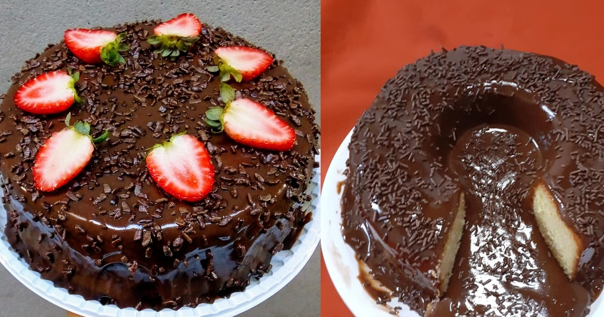

comfeitaria doce vida

bolo de chocolate vucão
Ingredientes
- 100g de manteiga
- 3 ovos
- 1 e meia xícara (chá) de açúcar
- 1 xícara (chá) dde chocolate em pó NESTLÈ DOIS FRADES
- xícara (chá) de leite líquido ninho forti + intregral
- 2 xícaras (chá) de farinha de trigo
- 1 colher (sopa) de fermento em pó
- meia colher (chá) de bicarbonato de sódio
cobertura
- 1 leite Moça (lata ou caixinha) 395g
- 100g de chocolate classic meio amargo
- 1 colher (sopa) de manteiga
- 1 creme de leite nestlé caixinha
- 50g de chocolate granulado paradecorar
modo de preparo
massa
- em uma batedeira, bata a manteiga, os ovos, o açucar e o chocolate em pó DOIS FRADES ate ficar homogêneo.
- desligue a batedeira, junte o leite NINHO, a farinha, o fermento e o bicarbonato e misture bem.
coloque em uma forma redonda de furo central (23 cm de diâmetro) umtada com manteiga e polvilhada com farinha de trigo, e leve ao forno médio-alto (200*C), preaquecido, por cerca de 40 minutos.
- espere amornar e desenforme.
Corbertura
- Em uma panela, coloque o leite MOÇA, o chocolate NESTLÈ Classic e a manteiga.
- Misture bem e leve ao fogo médio, por cerca de 8 minutos ou até desgrudar do fundo da panela.
- desligue o fogo, junte o NESTLÈ Creme de leite e misture bem.
- espere amornar e faça uma camada de brigadeiro em toda volta do bolo e o restante coloque no furo central, de modo a escorre levemente.
- decore com o granulado.